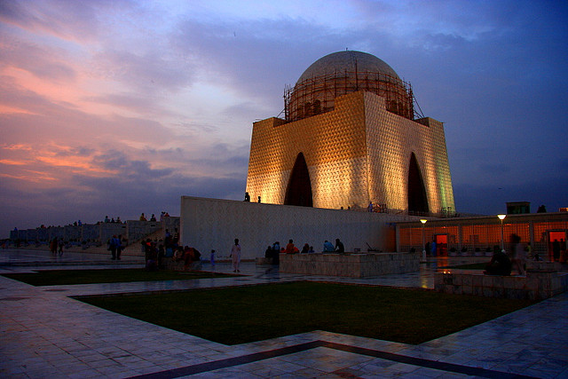
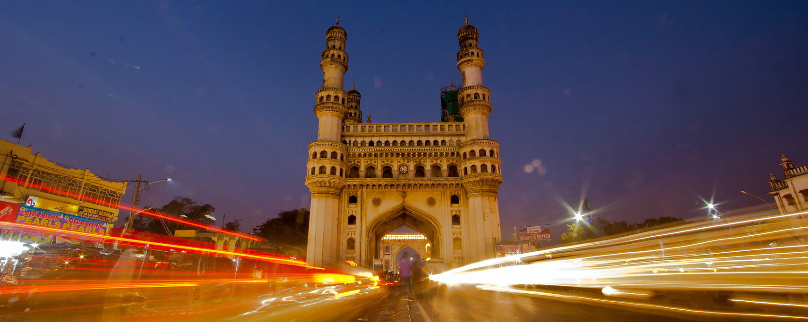

Welcome To Sindh Cities Details
1- Karachi

Karachi is one of the world's fastest growing cities, and has communities representing almost every ethnic group in Pakistan. Karachi is built on a coastal plains with scattered rocky outcroppings, hills and coastal marshlands.
2- Hyderabad

Muhammad Quli Qutb Shah established Hyderabad in 1591 to extend the capital beyond the fortified Golconda. In 1687, the city was annexed by the Mughals. In 1724, Mughal Viceroy Nizam Asaf Jah I declared his sovereignty and founded the Asaf Jahi dynasty, also known as the Nizams. Hyderabad served as the imperial capital of the Asaf Jahis from 1769 to 1948. As capital of the princely state of Hyderabad, the city housed the British Residency and cantonment until Indian independence in 1947. Hyderabad was annexed by the Indian Union in 1948 and continued as a capital of Hyderabad State (1948–56)
3- Sukkur

At the time of Pakistan's independence in 1947, Sukkur district comprised approximately 200,000 inhabitants,
mostly engaged in agricultural pursuits and fishing industry. Over time, Sukkur has seen a moderate rise in population (2 to 2.5% per annum) as compared to Pakistan's, except in late 1960s and early 70s when population growth rate reached 4.43% (1972 census)
due to internal migration and establishment of some large bridges on river